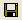

With BlueZone, it is possible to create a custom keyboard
map file and save that file so you can share the keyboard map with
others.
To export (save) a keyboard map file:
- Launch a BlueZone display session.
- From the BlueZone menu bar, click or click the Keyboard icon
on the BlueZone toolbar.
The Keyboard Options dialog displays.
- Make any desired keyboard map changes if you haven't already
done so.
- In the lower left hand corner, click the Export
Keyboard Options icon

.
A standard Windows file dialog opens.
- Type a name for the keyboard map file that you want to
export (BlueZone automatically adds the correct file extension).
- Click Save.
You have successfully exported your keyboard map to the
BlueZone Config folder.